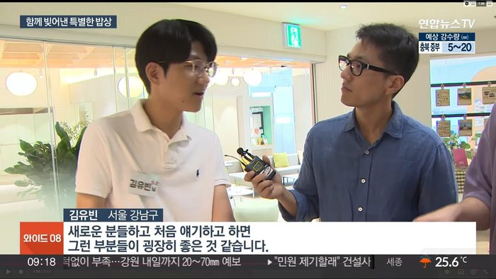
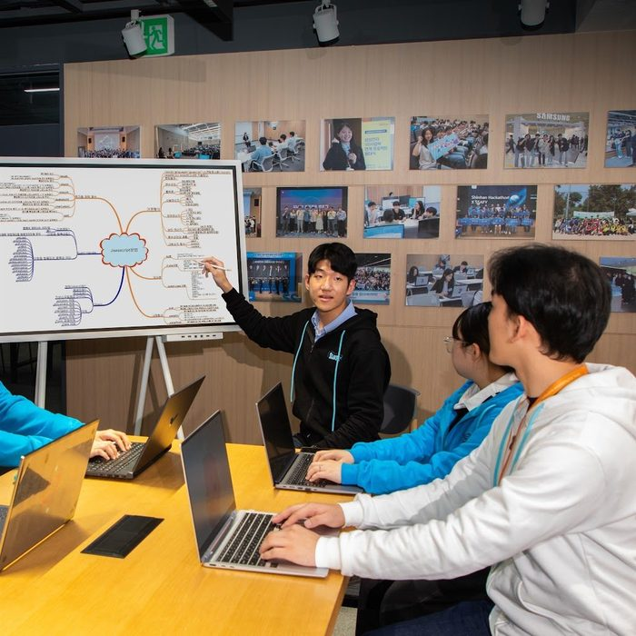
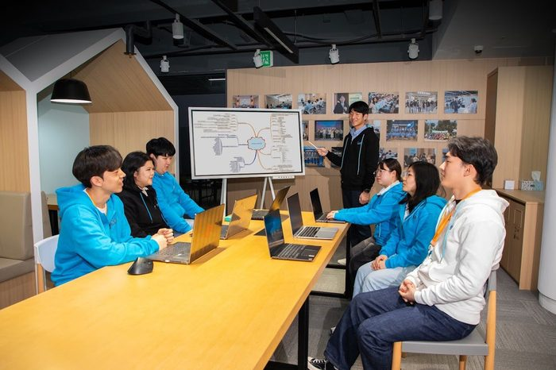
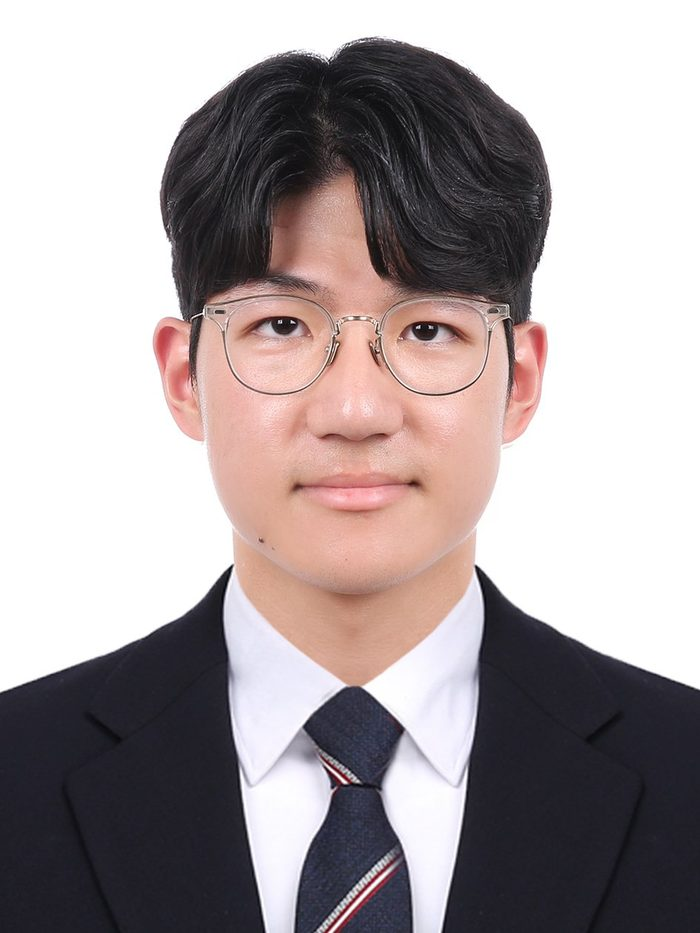
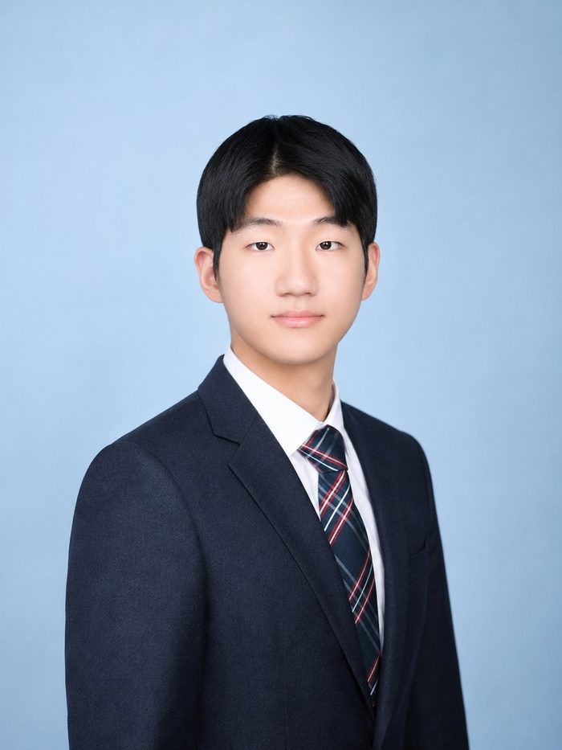
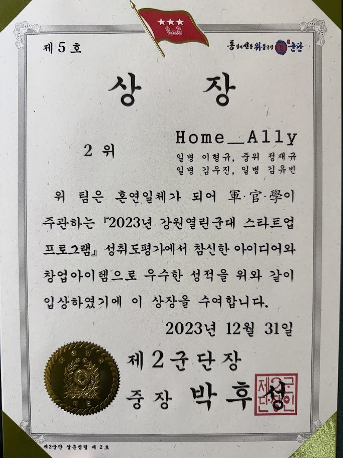
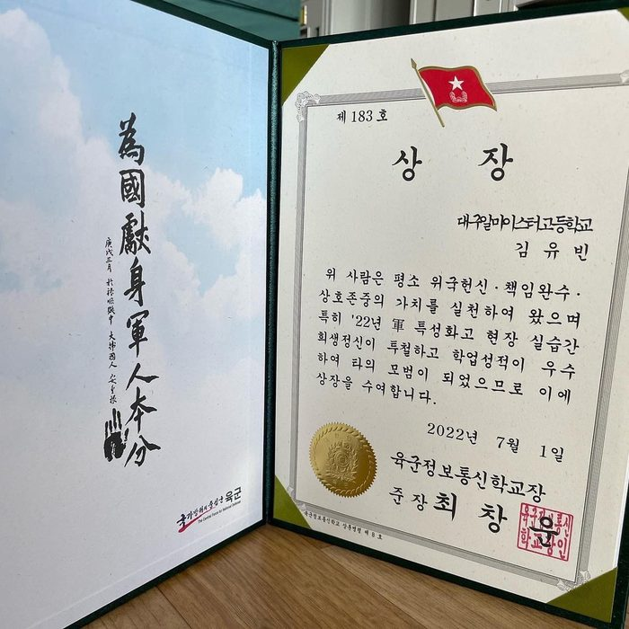
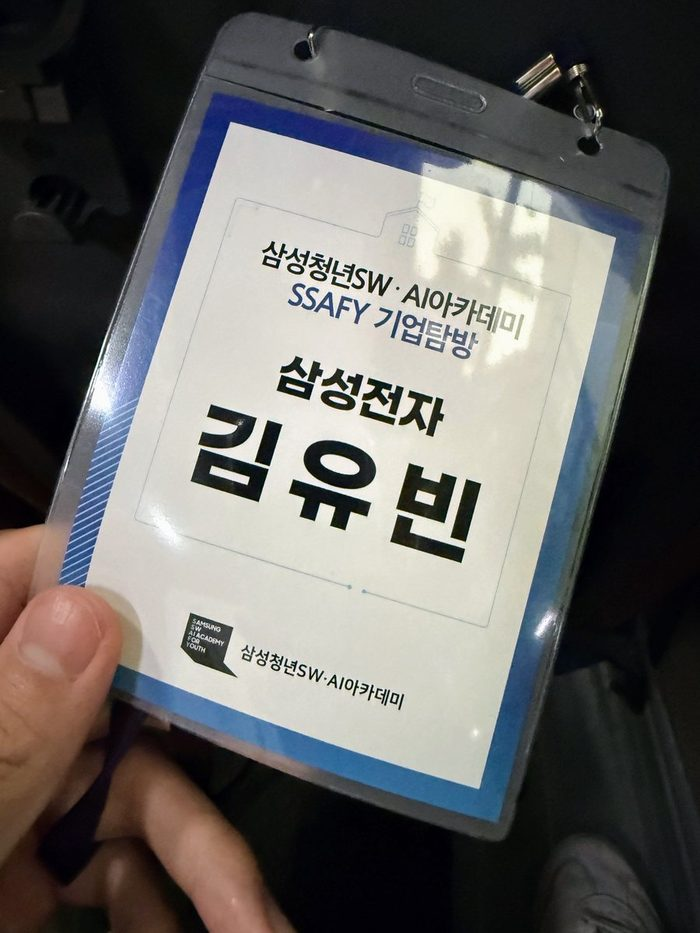
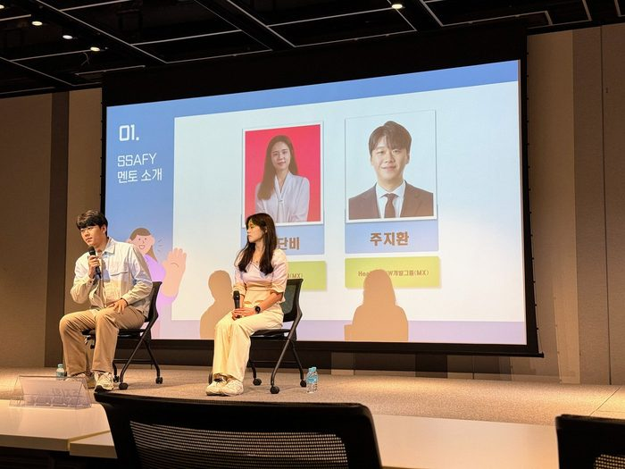

Archive — 활동 기록
김유빈 활동 갤러리 — THE
GALLERY
걸어온 시간의 물성(物性) — 현장은 기록으로 남을 때 경력이 됩니다.





Credentials — 자격 · 교육 · 상훈
THE CREDENTIALS
교육과 훈련의 현장에서 받은 상장과 기록 — 종이로 남은 증명입니다.
TESAT경제이해력검증시험한국경제신문 주관
OPIc IH영어 말하기 (Intermediate High)ACTFL 공인 등급
전기기능사국가기술자격한국산업인력공단
분양대행자부동산 분양 실무 자격주택·상가 분양 대행



